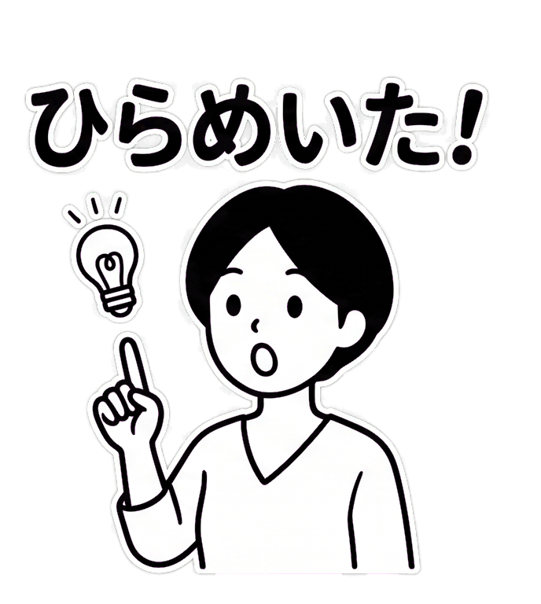

01 / 04 · LINEスタンプ用テンプレート集
PROMPT
TEMPLATES
好みの条件を選ぶだけ！
スタンプ専用プロンプトを一瞬で自動生成
FEATURE FLOW
INPUT
テイスト
ゆるかわ・水彩
セリフ
「ありがとう」
背景色
グリーンバック
GENERATE
OUTPUT
A cute shiba inu character smiling, watercolor style, isolated white background, suitable for LINE stickers...
02 / 04 · 画像背景透過ツール
BACKGROUND
REMOVER
単色背景をフチまできれいに自動透過！
LINEスタンプ申請基準を瞬時にクリア
BEFORE / AFTER
BEFORE
AUTO REMOVE
AFTER
03 / 04 · 画像分割ツール
IMAGE
SPLITTER
1枚のシート画像を均等マス目で一括スライス！
ZIPで全コマまとめて一瞬保存
GRID SPLIT
1 SHEET
01
02
03
SLICE & ZIP
INDIVIDUAL

04 / 04 · 画像リサイズツール
IMAGE
RESIZER
バラバラな画像サイズを自動最適化！
LINE公式規格に完全準拠
GUIDELINE FIT
ANY SIZE
1024 × 1024 px
1920 × 1080 px
800 × 1200 px
AUTO FIT
LINE SPEC
最大 370 × 320 px